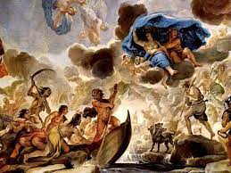
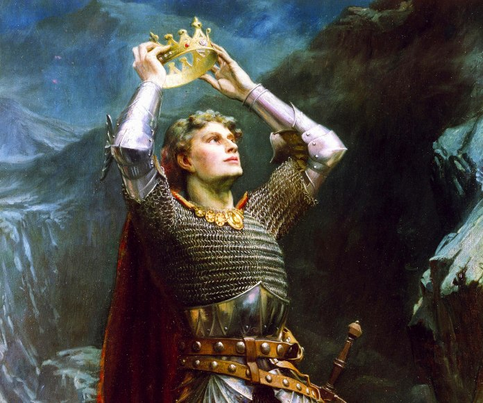

La mitología es un conjunto de mitos relativamente cohesionados o paralelamente adheridos: relatos que forman parte de una determinada religión o cultura.
También se les denomina mitos a los discursos, narraciones o expresiones culturales de origen
sagrado, y que posteriormente fueron secularizados y tratados como discursos relativos a una
cultura, a una época o a una serie de creencias de carácter imaginario.
Los mitos son relatos basados en la tradición y en la leyenda, creados para explicar el universo, el
origen del mundo, los fenómenos naturales y así como también para cualquier suceso para el cual no
haya una explicación conocida. Sin embargo, no todos los mitos tienen por qué tener este propósito
explicativo. Igualmente, la mayoría de los mitos están relacionados con una fuerza natural o deidad,
pero muchos son simplemente historias y leyendas que se han ido transmitiendo oralmente de
generación en generación.
La leyenda es una narración sobre hechos sobrenaturales y naturales o una mezcla de ambos que se transmite de generación en generación, de forma oral o escrita.
Se ubica en un tiempo y lugar similar al de los miembros de una comunidad, lo que aporta cierta
verosimilitud al relato. Pueden presentarse elementos sobrenaturales como milagros, criaturas
feéricas o de ultratumba etc. Y estos sucesos se presentan como reales y forman parte de la visión
del mundo propia o emic de la comunidad en la que se origina.
En su proceso de transmisión a través de la tradición oral, las leyendas experimentan a menudo
supresiones, añadiduras o modificaciones culturales que originan todo un mundo de variantes. Una de
las más comunes es la "cristianización" de leyendas paganas, o su adaptación a la visión infantil,
degradándose a ser simple folclore pero gracias a ello perdurando, aunque de una forma desfigurada,
ya que el cambio de los tiempos ha reducido a este ámbito las antiguas cosmovisiones, creencias y
costumbres.